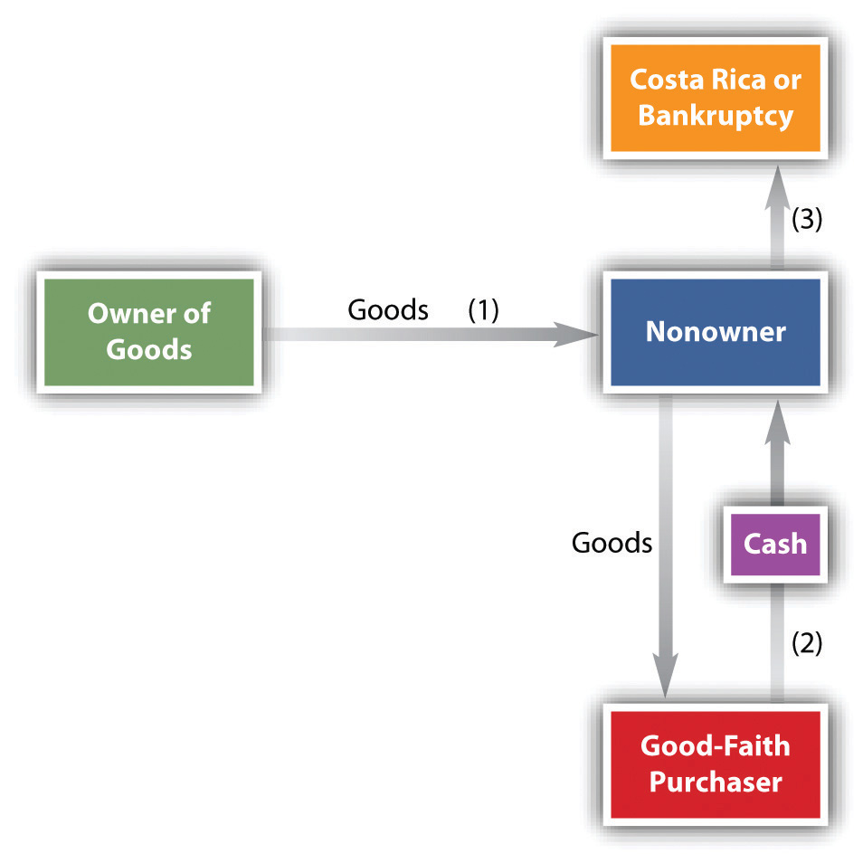
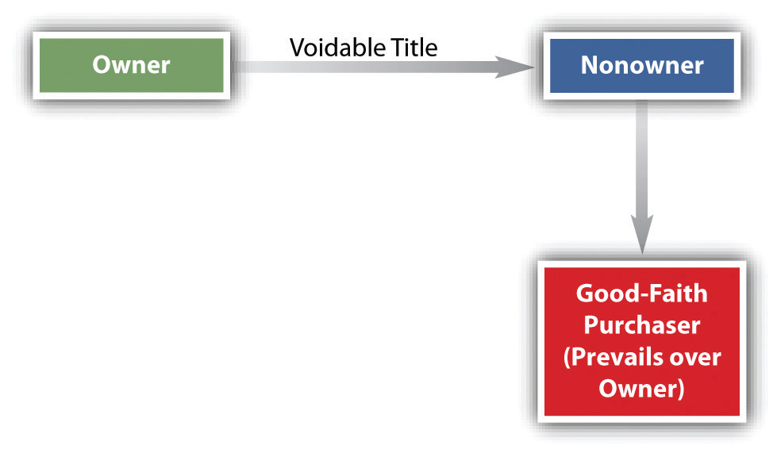
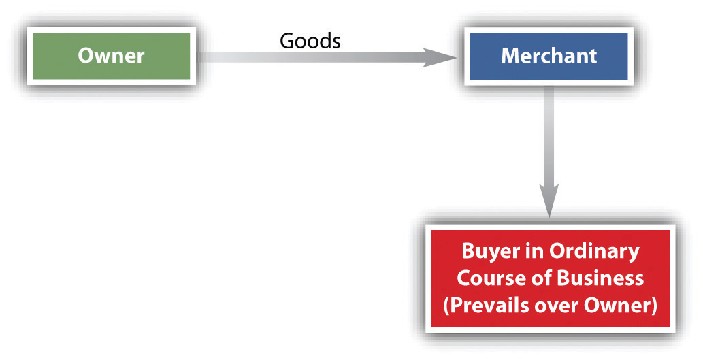

After reading this chapter, you should understand the following:
Parties to a sales contract will usually agree on the obvious details of a sales transaction—the nature of goods, the price, and the delivery time, as discussed in the next chapter. But there are two other issues of importance lurking in the background of every sale:
There are three reasons why it is important when title shifts from seller to buyer—that is, when the buyer gets title.
First, a sale cannot occur without a shift in title. You will recall that a sale is defined by the Uniform Commercial Code (UCC) as a “transfer of title from seller to buyer for a price.” Thus if there is no shift of title, there is no sale. And there are several consequences to there being no sale, one of which is—concerning a merchant-seller—that no implied warranty of merchantability arises. (Again, as discussed in the previous chapter, an implied warranty provides that when a merchant-seller sells goods, the goods are suitable for the ordinary purpose for which such goods are used.) In a lease, of course, title remains with the lessor.
Second, title is important because it determines whether creditors may take the goods. If Creditor has a right to seize Debtor’s goods to satisfy a judgment or because the parties have a security agreement (giving Creditor the right to repossess Debtor’s goods), obviously it won’t do at all for Creditor to seize goods when Debtor doesn’t have title to them—they are somebody else’s goods, and seizing them would be conversion, a tort (the civil equivalent of a theft offense).
Third, title is related to who has an insurable interest. A buyer cannot legally obtain insurance unless he has an insurable interest in the goods. Without an insurable interest, the insurance contract would be an illegal gambling contract. For example, if you attempt to take out insurance on a ship with which you have no connection, hoping to recover a large sum if it sinks, the courts will construe the contract as a wager you have made with the insurance company that the ship is not seaworthy, and they will refuse to enforce it if the ship should sink and you try to collect. Thus this question arises: under the UCC, at what point does the buyer acquire an insurable interest in the goods? Certainly a person has insurable interest if she has title, but the UCC allows a person to have insurable interest with less than full title. The argument here is often between two insurance companies, each denying that its insured had insurable interest as to make it liable.
The UCC at Section 2-401 provides that “title to goods cannot pass under a contract for sale prior to their identification to the contract.” (In a lease, of course, title to the leased goods does not pass at all, only the right to possession and use for some time in return for consideration.Uniform Commercial Code, Section 2A-103(1)(j).) So identification to the contract has to happen before title can shift. Identification to the contractSegregating specific goods from the mass as the ones for the immediate contract. here means that the seller in one way or another picks the goods to be sold out of the mass of inventory so that they can be delivered or held for the buyer.
Article 67 of the CISG says the same thing: “[T]he risk does not pass to the buyer until the goods are clearly identified to the contract, whether by markings on the goods, by shipping documents, by notice given to the buyer or otherwise.”
When are goods “identified”? There are two possibilities as to when identification happens.
Section 2-501(1) of the UCC says “identification can be made at any time and in any manner explicated agreed to by the parties.”
If the parties do not agree on when identification happens, the UCC default kicks in. Section 2-501(1) of the UCC says identification occurs
Thus if Very Fast Food Inc.’s purchasing agent looks at a new type of industrial sponge on Delta Sponge Makers’ store shelf for restaurant supplies, points to it, and says, “I’ll take it,” identification happens then, when the contract is made. But if the purchasing agent wants to purchase sponges for her fast-food restaurants, sees a sample on the shelf, and says, “I want a gross of those”—they come in boxes of one hundred each—identification won’t happen until one or the other of them chooses the gross of boxes of sponges out of the warehouse inventory.
Assuming identification is done, when does title shift? The law begins with the premise that the agreement of the parties governs. Section 2-401(1) of the UCC says that, in general, “title to goods passes from the seller to the buyer in any manner and on any conditions explicitly agreed on by the parties.” Many companies specify in their written agreements at what moment the title will pass; here, for example, is a clause that appears in sales contracts of Dow Chemical Company: “Title and risk of loss in all goods sold hereunder shall pass to Buyer upon Seller’s delivery to carrier at shipping point.” Thus Dow retains title to its goods only until it takes them to the carrier for transportation to the buyer.
Because the UCC’s default position (further discussed later in this chapter) is that title shifts when the seller has completed delivery obligations, and because the parties may agree on delivery terms, they also may, by choosing those terms, effectively agree when title shifts (again, they also can agree using any other language they want). So it is appropriate to examine some delivery terms at this juncture. There are three possibilities: shipment contracts, destination contracts, and contracts where the goods are not to be moved.
In a shipment contractSeller must see goods are on board vehicle of transportation., the seller’s obligation is to send the goods to the buyer, but not to a particular destination. The typical choices are set out in the UCC at Section 2-319:
In a destination contractSeller’s obligation is to get goods to a specific destination., the seller’s obligation is to see to it that the goods actually arrive at the destination. Here again, the parties may employ the use of abbreviations that indicate the seller’s duties. See the following from the UCC, Section 2-319:
It is not uncommon for contracting parties to sell and buy goods stored in a grain elevator or warehouse without physical movement of the goods. There are two possibilities:
Here are examples showing how these concepts work.
Suppose the contract calls for Delta Sponge Makers to “ship the entire lot of industrial grade Sponge No. 2 by truck or rail” and that is all that the contract says about shipment. That’s a “shipment contract,” and the UCC, Section 2-401(2)(a), says that title passes to Very Fast Foods at the “time and place of shipment.” At the moment that Delta turns over the 144 cartons of 1,000 sponges each to a trucker—perhaps Easy Rider Trucking comes to pick them up at Delta’s own factory—title has passed to Very Fast Foods.
Suppose the contract calls for Delta to “deliver the sponges on June 10 at the Maple Street warehouse of Very Fast Foods Inc.” This is a destination contract, and the seller “completes his performance with respect to the physical delivery of the goods” when it pulls up to the door of the warehouse and tenders the cartons.Uniform Commercial Code, Section 2-401(2)(b). “Tender” means that the party—here Delta Sponge Makers—is ready, able, and willing to perform and has notified its obligor of its readiness. When the driver of the delivery truck knocks on the warehouse door, announces that the gross of industrial grade Sponge No. 2 is ready for unloading, and asks where the warehouse foreman wants it, Delta has tendered delivery, and title passes to Very Fast Foods.
Suppose Very Fast Foods fears that the price of industrial sponges is about to soar; it wishes to acquire a large quantity long before it can use them all or even store them all. Delta does not store all of its sponges in its own plant, keeping some of them instead at Central Warehousing. Central is a baileeOne rightfully possessing goods not hers., one who has rightful possession but not title. (A parking garage often is a bailee of its customers’ cars; so is a carrier carrying a customer’s goods.) Now assume that Central has issued a warehouse receiptA written document for items warehoused, serving as evidence of title to the stored goods. (a document of title that provides proof of ownership of goods stored in a warehouse) to Delta and that Delta’s contract with Very Fast Foods calls for Delta to deliver “document of title at the office of First Bank” on a particular day. When the goods are not to be physically moved, that title passes to Very Fast Foods “at the time when and the place where” Delta delivers the document.
Suppose the contract did not specify physical transfer or exchange of documents for the purchase price. Instead, it said, “Seller agrees to sell all sponges stored on the north wall of its Orange Street warehouse, namely, the gross of industrial Sponge No. 2, in cartons marked B300–B444, to Buyer for a total purchase price of $14,000, payable in twelve equal monthly installments, beginning on the first of the month beginning after the signing of this agreement.” Then title passes at the time and place of contracting—that is, when Delta Sponge Makers and Very Fast Foods sign the contract.
So, as always under the UCC, the parties may agree on the terms they want when title shifts. They can do that directly by just saying when—as in the Dow Chemical example—or they can indirectly agree when title shifts by stipulating delivery terms: shipment, destination, goods not to be moved. If they don’t stipulate, the UCC default kicks in.
If the parties do not stipulate by any means when title shifts, Section 2-401(2) of the UCC provides that “title passes to the buyer at the time and place at which seller completes his performance with reference to the physical delivery of the goods.” And if the parties have no term in their contract about delivery, the UCC’s default delivery term controls. It says “the place for delivery is the seller’s place of business or if he has none his residence,” and delivery is accomplished at the place when the seller “put[s] and hold[s] conforming goods at the buyer’s disposition and give[s] the buyer any notification reasonably necessary to enable him to take delivery.”Uniform Commercial Code, Sections 2-308 and 2-503.
Title is important for three reasons: it determines whether a sale has occurred, it determines rights of creditors, and it affects who has an insurable interest. Parties may explicitly agree when title shifts, or they may agree indirectly by settling on delivery terms (because absent explicit agreement, delivery controls title passage). Delivery terms to choose from include shipment contracts, destination contracts, and delivery without the goods being moved (with or without documents of title). If nothing is said about when title shifts, and the parties have not indirectly agreed by choosing a delivery term, then title shifts when delivery obligations under the contract are complete, and if there are no delivery terms, delivery happens when the seller makes the goods available at seller’s place of business (or if seller has no place of business, goods will be made available at seller’s residence)—that’s when title shifts.
We have examined when title transfers from buyer to seller, and here the assumption is, of course, that seller had good title in the first place. But what title does a purchaser acquire when the seller has no title or has at best only a voidable title? This question has often been difficult for courts to resolve. It typically involves a type of eternal triangle with a three-step sequence of events, as follows (see Figure 18.1 "Sales by Nonowners"): (1) The nonowner obtains possession, for example, by loan or theft; (2) the nonowner sells the goods to an innocent purchaser for cash; and (3) the nonowner then takes the money and disappears, goes into bankruptcy, or ends up in jail. The result is that two innocent parties battle over the goods, the owner usually claiming that the purchaser is guilty of conversionThe civil wrong of taking property without its owner’s consent. (i.e., the unlawful assumption of ownership of property belonging to another) and claiming damages or the right to recover the goods.
Figure 18.1 Sales by Nonowners
To resolve this dilemma, we begin with a basic policy of jurisprudence: a person cannot transfer better title than he or she had. (The Uniform Commercial Code [UCC] notes this policy in Sections 2-403, 2A-304, and 2A-305.) This policy would apply in a sale-of-goods case in which the nonowner had a void title or no title at all. For example, if a nonowner stole the goods from the owner and then sold them to an innocent purchaser, the owner would be entitled to the goods or to damages. Because the thief had no title, he had no title to transfer to the purchaser. A person cannot get good title to goods from a thief, nor does a person have to retain physical possession of her goods at all times to retain their ownership—people are expected to leave their cars with a mechanic for repair or to leave their clothing with a dry cleaner.
If thieves could pass on good title to stolen goods, there would be a hugely increased traffic in stolen property; that would be unacceptable. In such a case, the owner can get her property back from whomever the thief sold it to in an action called replevinAn action to recover possession of goods wrongfully held. (an action to recover personal property unlawfully taken). On the other hand, when a buyer in good faith buys goods from an apparently reputable seller, she reasonably expects to get good title, and that expectation cannot be dashed with impunity without faith in the market being undermined. Therefore, as between two innocent parties, sometimes the original owner does lose, on the theory that (1) that person is better able to avoid the problem than the downstream buyer, who had absolutely no control over the situation, and (2) faith in commercial transactions would be undermined by allowing original owners to claw back their property under all circumstances.
So the basic legal policy that a person cannot pass on better title than he had is subject to a number of exceptions. In Chapter 24 "Holder in Due Course and Defenses", for instance, we discuss how certain purchasers of commercial paper (“holders in due course”) will obtain greater rights than the sellers possessed. And in Chapter 28 "Secured Transactions and Suretyship", we examine how a buyer in the ordinary course of business is allowed to purchase goods free of security interests that the seller has given to creditors. Likewise, the law governing the sale of goods contains exceptions to the basic legal policy. These usually fall within one of two categories: sellers with voidable title and entrustment.
As noted, there are exceptions to the law governing the sale of goods.
Under the UCC, a person with a voidable title has the power to transfer title to a good-faith purchaser for value (see Figure 18.2 "Voidable Title"). The UCC defines good faith as “honesty in fact in the conduct or transaction concerned.”Uniform Commercial Code, Section 1-201(19). A “purchaser” is not restricted to one who pays cash; any taking that creates an interest in property, whether by mortgage, pledge, lien, or even gift, is a purchase for purposes of the UCC. And “value” is not limited to cash or goods; a person gives value if he gives any consideration sufficient to support a simple contract, including a binding commitment to extend credit and security for a preexisting claim. Recall from Chapter 9 "The Agreement" that a “voidable” title is one that, for policy reasons, the courts will cancel on application of one who is aggrieved. These reasons include fraud, undue influence, mistake, and lack of capacity to contract. When a person has a voidable title, title can be taken away from her, but if it is not, she can transfer better title than she has to a good-faith purchaser for value. (See Section 18.4.2 "Defrauding Buyer Sells to Good-Faith Purchaser for Value" at the end of this chapter.)
Rita, sixteen years old, sells a video game to her neighbor Annie, who plans to give the game to her nephew. Since Rita is a minor, she could rescind the contract; that is, the title that Annie gets is voidable: it is subject to be avoided by Rita’s rescission. But Rita does not rescind. Then Annie discovers that her nephew already has that video game, so she sells it instead to an office colleague, Donald. He has had no notice that Annie bought the game from a minor and has only a voidable title. He pays cash. Should Rita—the minor—subsequently decide she wants the game back, it would be too late: Annie has transferred good title to Donald even though Annie’s title was voidable.
Figure 18.2 Voidable Title
Suppose Rita was an adult and Annie paid her with a check that later bounced, but Annie sold the game to Donald before the check bounced. Does Donald still have good title? The UCC says he does, and it identifies three other situations in which the good-faith purchaser is protected: (1) when the original transferor was deceived about the identity of the purchaser to whom he sold the goods, who then transfers to a good-faith purchaser; (2) when the original transferor was supposed to but did not receive cash from the intermediate purchaser; and (3) when “the delivery was procured through fraud punishable as larcenous under the criminal law.”Uniform Commercial Code, Sections 2-403(1), 2-403(1), 2A-304, and 2A-305.
This last situation may be illustrated as follows: Dimension LLC leased a Volkswagen to DK Inc. The agreement specified that DK could use the Volkswagen solely for business and commercial purposes and could not sell it. Six months later, the owner of DK, Darrell Kempf, representing that the Volkswagen was part of DK’s used-car inventory, sold it to Edward Seabold. Kempf embezzled the proceeds from the sale of the car and disappeared. When DK defaulted on its payments for the Volkswagen, Dimension attempted to repossess it. Dimension discovered that Kempf had executed a release of interest on the car’s title by forging the signature of Dimension’s manager. The Washington Court of Appeals, applying the UCC, held that Mr. Seabold should keep the car. The car was not stolen from Dimension; instead, by leasing the vehicle to DK, Dimension transferred possession of the car to DK voluntarily, and because Seabold was a good-faith purchaser, he won.Dimension Funding, L.L.C. v. D.K. Associates, Inc., 191 P.3d 923 (Wash. App. 2008).
A merchant who deals in particular goods has the power to transfer all rights of one who entrusts to him goods of the kind to a “buyer in the ordinary course of business” (see Figure 18.3 "Entrustment").Uniform Commercial Code, Sections 2-403(2), 2A-304(2), and 2A-305(2). The UCC defines such a buyer as a person who buys goods in an ordinary transaction from a person in the business of selling that type of goods, as long as the buyer purchases in “good faith and without knowledge that the sale to him is in violation of the ownership rights or security interest of a third party in the goods.”Uniform Commercial Code, Section 1-201(9). Bess takes a pearl necklace, a family heirloom, to Wellborn’s Jewelers for cleaning; as the entrustorOne who puts something into another’s possession for its care., she has entrusted the necklace to an entrusteeOne to whom something is put for its care.. The owner of Wellborn’s—perhaps by mistake—sells it to Clara, a buyer, in the ordinary course of business. Bess cannot take the necklace back from Clara, although she has a cause of action against Wellborn’s for conversion. As between the two innocent parties, Bess and Clara (owner and purchaser), the latter prevails. Notice that the UCC only says that the entrustee can pass whatever title the entrustor had to a good-faith purchaser, not necessarily good title. If Bess’s cleaning woman borrowed the necklace, soiled it, and took it to Wellborn’s, which then sold it to Clara, Bess could get it back because the cleaning woman had no title to transfer to the entrustee, Wellborn’s.
Figure 18.3 Entrustment
Entrustment is based on the general principle of estoppel: “A rightful owner may be estopped by his own acts from asserting his title. If he has invested another with the usual evidence of title, or an apparent authority to dispose of it, he will not be allowed to make claim against an innocent purchaser dealing on the faith of such apparent ownership.”Zendman v. Harry Winston, Inc., 111 N.E. 2d 871 (N.Y. 1953).
The general rule—for obvious reasons—is that nobody can pass on better title to goods than he or she has: a thief cannot pass on good title to stolen goods to anybody. But in balancing that policy against the reasonable expectations of good-faith buyers that they will get title, the UCC has made some exceptions. A person with voidable title can pass on good title to a good-faith purchaser, and a merchant who has been entrusted with goods can pass on title of the entrustor to a good-faith purchaser.
“Risk of loss” means who has to pay—who bears the risk—if the goods are lost or destroyed without the fault of either party. It is obvious why this issue is important: Buyer contracts to purchase a new car for $35,000. While the car is in transit to Buyer, it is destroyed in a landslide. Who takes the $35,000 hit?
The CISG, Article 66, provides as follows: “Loss of or damage to the goods after the risk has passed to the buyer does not discharge him from his obligation to pay the price, unless the loss or damage is due to an act or omission of the seller.”
Just as title passes in accordance with the parties’ agreement, so too can the parties fix the risk of loss on one or the other. They may even devise a formula to divide the risk between themselves.Uniform Commercial Code, Section 2-303.
Common terms by which parties set out their delivery obligations that then affect when title shifts (F.O.B., F.A.S., ex-ship, and so on) were discussed earlier in this chapter. Similarly, parties may use common terms to set out which party has the risk of loss; these situation arise with trial sales. That is, sometimes the seller will permit the buyer to return the goods even though the seller had conformed to the contract. When the goods are intended primarily for the buyer’s use, the transaction is said to be “sale on approval.” When they are intended primarily for resale, the transaction is said to be “sale or return.” When the “buyer” is really only a sales agent for the “seller,” it is a consignment sale.
Under a sale-on-approval contractAn agreement whereby a buyer receives goods for examination. Risk of loss and title remains with the seller until the buyer indicates his or her approval of the goods (or after a reasonable time)., risk of loss (and title) remains with the seller until the buyer accepts, and the buyer’s trial use of the goods does not in itself constitute acceptance. If the buyer decides to return the goods, the seller bears the risk and expense of return, but a merchant buyer must follow any reasonable instructions from the seller. Very Fast Foods asks Delta for some sample sponges to test on approval; Delta sends a box of one hundred sponges. Very Fast plans to try them for a week, but before that, through no fault of Very Fast, the sponges are destroyed in a fire. Delta bears the loss.Uniform Commercial Code, Section 2-327(1)(a).
The buyer might take the goods with the expectation of reselling them—as would a women’s wear shop buy new spring fashions, expecting to sell them. But if the shop doesn’t sell them before summer wear is in vogue, it could arrange with the seller to return them for credit. In contrast to sale-on-approval contracts, sale-or-return contractsAn agreement whereby the buyer (usually a retailer) accepts goods from a seller for resale. Risk of loss and title transfer to the buyer them, but if the goods do not sell, they may be returned to the seller, at the buyer’s risk and expense. have risk of loss (and title too) passing to the buyer, and the buyer bears the risk and expense of returning the goods.
Occasionally the question arises whether the buyer’s other creditors may claim the goods when the sales contract lets the buyer retain some rights to return the goods. The answer seems straightforward: in a sale-on-approval contract, where title remains with the seller until acceptance, the buyer does not own the goods—hence they cannot be seized by his creditors—unless he accepts them, whereas they are the buyer’s goods (subject to his right to return them) in a sale-or-return contract and may be taken by creditors if they are in his possession.
In a consignment situation, the seller is a bailee and an agent for the owner who sells the goods for the owner and takes a commission. Under the Uniform Commercial Code (UCC), this is considered a sale or return, thus the consignee (at whose place the goods are displayed for sale to customers) is considered a buyer and has the risk of loss and title.Uniform Commercial Code, Section 2-326(3). The consignee’s creditors can take the goods; that is, unless the parties comply “with an applicable law providing for a consignor’s interest or the like to be evidenced by a sign, or where it is established that the person conducting the business is generally known by his creditors to be substantially engaged in selling the goods of others” (or complies with secured transactions requirements under Article 9, discussed in a later chapter).Uniform Commerical Code, Section 2-326.
If the parties fail to specify how the risk of loss is to be allocated or apportioned, the UCC again supplies the answers. A generally applicable rule, though not explicitly stated, is that risk of loss passes when the seller has completed obligations under the contract. Notice this is not the same as when title passes: title passes when seller has completed delivery obligations under the contract, risk of loss passes when all obligations are completed. (Thus a buyer could get good title to nonconforming goods, which might be better for the buyer than not getting title to them: if the seller goes bankrupt, at least the buyer has something of value.)
If the goods are conforming, then risk of loss would indeed pass when delivery obligations are complete, just as with title. And the analysis here would be the same as we looked at in examining shift of title.
A shipment contract. The contract requires Delta to ship the sponges by carrier but does not require it to deliver them to a particular destination. In this situation, risk of loss passes to Very Fast Foods when the goods are delivered to the carrier.
The CISG—pretty much like the UCC—provides as follows (Article 67):
If the contract of sale involves carriage of the goods and the seller is not bound to hand them over at a particular place, the risk passes to the buyer when the goods are handed over to the first carrier for transmission to the buyer in accordance with the contract of sale. If the seller is bound to hand the goods over to a carrier at a particular place, the risk does not pass to the buyer until the goods are handed over to the carrier at that place.
A destination contract. If the destination contract agreement calls for Delta to deliver the sponges by carrier to a particular location, Very Fast Foods assumes the risk of loss only when Delta’s carrier tenders them at the specified place.
The CISG provides for basically the same thing (Article 69): “If the contract is for something other than shipment, the risk passes to the buyer when he takes over the goods or, if he does not do so in due time, from the time when the goods are placed at his disposal and he commits a breach of contract by failing to take delivery.”
Goods not to be moved. If Delta sells sponges that are stored at Central Warehousing to Very Fast Foods, and the sponges are not to be moved, Section 2-509(2) of the UCC sets forth three possibilities for transfer of the risk of loss:
All other cases. In any case that does not fit within the rules just described, the risk of loss passes to the buyer only when the buyer actually receives the goods. Cases that come within this section generally involve a buyer who is taking physical delivery from the seller’s premises. A merchant who sells on those terms can be expected to insure his interest in any goods that remain under his control. The buyer is unlikely to insure goods not in his possession. The Ramos case (Section 18.4.3 "Risk of Loss, Seller a Merchant" in this chapter) demonstrates how this risk-of-loss provision applies when a customer pays for merchandise but never actually receives his purchase because of a mishap.
The general rule for risk of loss was set out as this: risk of loss shifts when seller has completed obligations under the contract. We said if the goods are conforming, the only obligation left is delivery, so then risk of loss would shift upon delivery. But if the goods are nonconforming, then the rule would say the risk doesn’t shift. And that’s correct, though it’s subject to one wrinkle having to do with insurance. Let’s examine the two possible circumstances: breach by seller and breach by buyer.
First, suppose the seller breaches the contract by proffering nonconforming goods, and the buyer rejects them—never takes them at all. Then the goods are lost or damaged. Under Section 2-510(1) of the UCC, the loss falls on seller and remains there until seller cures the breach or until buyer accepts despite the breach. Suppose Delta is obligated to deliver a gross of industrial No. 2 sponges; instead it tenders only one hundred cartons or delivers a gross of industrial No. 3 sponges. The risk of loss falls on Delta because Delta has not completed its obligation under the contract and Very Fast Foods doesn’t have possession of the goods. Or suppose Delta has breached the contract by tendering to Very Fast Foods a defective document of title. Delta cures the defect and gives the new document of title to Very Fast Foods, but before it does so the sponges are stolen. Delta is responsible for the loss.
Now suppose that a seller breaches the contract by proffering nonconforming goods and that the buyer, not having discovered the nonconformity, accepts them—the nonconforming goods are in the buyer’s hands. The buyer has a right to revoke acceptance, but before the defective goods are returned to the seller, they are destroyed while in the buyer’s possession. The seller breached, but here’s the wrinkle: the UCC says that the seller bears the loss only to the extent of any deficiency in the buyer’s insurance coverage.Uniform Commercial Code, Section 2-510(2). Very Fast Foods had taken delivery of the sponges and only a few days later discovered that the sponges did not conform to the contract. Very Fast has the right to revoke and announces its intention to do so. A day later its warehouse burns down and the sponges are destroyed. It then discovers that its insurance was not adequate to cover all the sponges. Who stands the loss? The seller does, again, to the extent of any deficiency in the buyer’s insurance coverage.
Second, what if the buyer breaches the contract? Here’s the scenario: Suppose Very Fast Foods calls two days before the sponges identified to the contract are to be delivered by Delta and says, “Don’t bother; we no longer have a need for them.” Subsequently, while the lawyers are arguing, Delta’s warehouse burns down and the sponges are destroyed. Under the rules, risk of loss does not pass to the buyer until the seller has delivered, which has not occurred in this case. Nevertheless, responsibility for the loss here has passed to Very Fast Foods, to the extent that the seller’s insurance does not cover it. Section 2-510(3) of the UCC permits the seller to treat the risk of loss as resting on the buyer for a “commercially reasonable time” when the buyer repudiates the contract before risk of loss has passed to him. This transfer of the risk can take place only when the goods are identified to the contract. The theory is that if the buyer had taken the goods as per the contract, the goods would not have been in the warehouse and thus would not have been burned up.
We noted at the start of this chapter that who has title is important for several reasons, one of which is because it affects who has an insurable interest. (You can’t take out insurance in something you have no interest in: if you have no title, you may not have an insurable interest.) And it was noted that the rules on risk of loss are affected by insurance. (The theory is that a businessperson is likely to have insurance, which is a cost of business, and if she has insurance and also has possession of goods—even nonconforming ones—it is reasonable to charge her insurance with loss of the goods; thus she will have cause to take care of them in her possession, else her insurance rates increase.) So in commercial transactions insurance is important, and when goods are lost or destroyed, the frequent argument is between the buyer’s and the seller’s insurance companies, neither of which wants to be responsible. They want to deny that their insured had an insurable interest. Thus it becomes important who has an insurable interest.
It is not necessary for the buyer to go all the way to having title in order for him to have an insurable interest. The buyer obtains a “special property and insurable interest in goods by identification of existing goods as goods to which the contract refers.”Uniform Commercial Code, Section 2-501(1). We already discussed how “identification” of the goods can occur. The parties can do it by branding, marking, tagging, or segregating them—and they can do it at any time. We also set out the rules for when goods will be considered identified to the contract under the UCC if the parties don’t do it themselves (Section 18.1.2 "Goods Identified to the Contract").
As long as the seller retains title to or any security interest in the goods, he has an insurable interest.
The buyer’s “special property” interest that arises upon identification of goods gives the buyer rights other than that to insure the goods. For example, under Section 2-502 of the UCC, the buyer who has paid for unshipped goods may take them from a seller who becomes insolvent within ten days after receipt of the whole payment or the first installment payment. Similarly, a buyer who has not yet taken delivery may sue a third party who has in some manner damaged the property.
Knowing who has the risk of loss in a contract for the sale of goods is important for obvious reasons: it is not uncommon for goods to be lost or stolen between the time they leave the seller’s possession and before the buyer gets them. The parties are certainly free to agree on when the risk of loss shifts; if they do not, the UCC says it shifts when the seller has completed obligations under the contract. Thus if there is no breach, the risk of loss shifts upon delivery. If there is a breach, the UCC places the risk of loss on the breaching party, with this caveat: where the nonbreaching party is in control of the goods, the UCC places the risk of loss on that party to the extent of her insurance coverage. So if there is a breach by the seller (delivery of nonconforming goods), the risk of loss never shifts except if the buyer has taken possession of the nonconforming goods; in that case, the buyer does have the risk of loss insofar as her insurance covers the loss. If the buyer breaches by repudiating before the risk of loss passes to him (by the goods’ delivery), the UCC permits the seller to treat the risk of loss as resting on the buyer for a commercially reasonable time as to goods identified to the contract.
Insurable interest becomes important when goods suffer a casualty loss because—among other reasons—often neither the seller’s nor the buyer’s insurance company wants its insured to have an interest in the goods: each side denies it. The seller retains an insurable interest if he has title to or any security interest in the goods, and the buyer obtains an insurable interest by identification of existing goods as goods to which the contract refers. A person has an insurable interest in any property owned or in the person’s possession.
Sam and Mac, Inc. v. Treat
783 N.E.2d 760 (Ind. App. 2003)
Anthony L. Gruda and Sharon R. Gruda (the “Grudas”) owned and operated Gruda Enterprises, Inc. (Gruda Enterprises), which in turn operated The Kitchen Works, a kitchen supply business. On March 5, 1998, Gruda Enterprises contracted to sell a set of kitchen cabinets to Sam and Mac, Inc. [SMI], a commercial construction and contracting corporation. Gruda Enterprises was also to deliver and install the cabinets. Because it did not have the cabinets in stock, Gruda Enterprises ordered them from a manufacturer. On March 14, 1998, nine days after placing the order, SMI pre-paid Gruda Enterprises for the cabinet order.
On May 14, 1998, prior to delivery and installation of the cabinets, the Grudas ceased operation of Gruda Enterprises and filed for personal bankruptcy. Gruda Enterprises did not file for bankruptcy and was not dissolved. Instead, the Grudas’ stock in Gruda Enterprises became part of their bankruptcy estate.…When no cabinets were delivered or installed, and the Grudas ceased operation of Gruda Enterprises, SMI asked Treat, who was the landlord of Gruda Enterprises, to open the business premises and permit SMI to remove cabinets from the property. Treat declined, stating that he feared he would incur liability to Gruda Enterprises if he started giving away its inventory. Treat and other secured creditors sued Gruda Enterprises, which owed them money. [Summary judgment was for Treat, SMI appeals.]
SMI contends that there was a completed sale between SMI, as the buyer, and Gruda Enterprises, as the seller. Specifically, SMI maintains that title to the cabinets under [UCC] 2-401(3)(b) passed to SMI when the contract for sale was [made].…Therefore, SMI argues that the trial court improperly granted summary judgment in favor of Treat because [SMI] held title and, thus, a possessory interest in the cabinets.…
[T]he contract is governed by the…Indiana Uniform Commercial Code (UCC). 2-401 establishes the point in time at which title passes from seller to buyer. Specifically, 2-401(2) provides, in pertinent part, that unless explicitly agreed, title passes to the buyer at the time and place at which the seller completes his performance with respect to the physical delivery of goods.…
Moreover, the record indicates that SMI and Gruda Enterprises did not have an explicit agreement to pass title at any other time, or at any time prior to actual delivery of the cabinets. SMI argues that title passed to it under 2-401(3)(b) [“where delivery is to be made without moving the goods,…if the goods are at the time of contacting already identified and no documents are to be delivered, title passes at the time and place of contacting.”].…However, the record reflects that SMI admitted that the terms of the contract required Gruda Enterprises to not only order the cabinets, but to deliver and install them at the location specified by SMI, i.e. the house that SMI was building. 2-403(3) applies to purchases of goods where delivery is to be made without moving the goods. SMI argues that since the cabinets were identified at the time of contracting and no documents needed delivery, title passed at the time and place of contracting.…
[T]itle to goods cannot pass under a contract for sale prior to their identification in the contract. See 2-401(1). This does not mean that title passes when the goods are identified. It only means that identification is merely the earliest possible opportunity for title to pass.…[I]dentification does not, in and of itself, confer either ownership or possessory rights in the goods. [UCC] 2-401(2)(b) states that “[i]f the contract requires delivery at destination, title passes on tender there.” In the present case, tender did not occur when Gruda Enterprises called SMI to notify it that the cabinets were in and ready to be delivered and installed. SMI requested that the cabinets remain at the warehouse until the house it was building was ready for the cabinets to be installed.…[W]e find that SMI and Gruda Enterprises agreed to a destination point, i.e. the house that SMI was building. Accordingly, we find that 2-401(2)(b) is also applicable. The title to the cabinets did not pass to SMI because the cabinets were not delivered and installed at the agreed upon destination. Therefore, we conclude that SMI does not have a possessory interest in the cabinets.
Based on the foregoing, we conclude that the trial court properly granted summary judgment in favor of Treat.…Affirmed.
This is footnote 2 (it was not included in the parts of the case set out above): “We note that Treat owned Kitchen Wholesalers, Inc., from approximately 1987 to approximately June 20, 1996. On or about June 20, 1996, Kitchen Wholesalers, Inc. sold its assets, inventory, equipment, and business to Gruda Enterprises. The Grudas executed an Agreement for Sale of Assets, Lease, and Security Agreement, as well as a Promissory Note in which they agreed to pay $45,000 for the assets, inventory, equipment, and business, and to pay monthly rent of $1,500 for the premises where the business was located, and secured their obligations with inventory, equipment, and proceeds therefrom, of the business which they were purchasing. Treat filed and perfected a security interest in the accounts receivable, inventory, and equipment of The Kitchen Works on August 28, 1998. The Grudas currently owe Treat $61,794.99.”
This means that when the Grudas failed to pay Treat, he had a right to repossess all assets belonging to them, including the cabinets—Treat was a creditor of the Grudas. SMI, of course, contended it had title to the cabinets. Based on the court’s analysis, who is going to get the cabinets?
Marlow v. Conley
787 N.E.2d 490, (Ind. App. 2003)
Donald E. Marlow appeals the trial court’s judgment in favor of Robert L. Medley and Linda L. Medley (collectively, the “Medleys”) on Marlow’s complaint for replevin. Marlow raises [this issue],…whether the Medleys obtained good title to a truck pursuant to Indiana UCC 2-403(1). We affirm.
The relevant facts follow. On May 21, 2000, Robert Medley attended a car show in Indianapolis. Henderson Conley attended the same car show and was trying to sell a 1932 Ford Truck (“Truck”). Conley told Robert that he operated a “buy here, pay here car lot,” and Robert saw that the Truck had a dealer license plate. Robert purchased the Truck for $7,500.00 as a gift for Linda. Conley gave Robert the Truck’s certificate of title, which listed the owner as Donald Marlow. When Robert questioned Conley about the owner of the Truck, Conley responded that Marlow had signed the title as part of a deal Conley had made with him. After purchasing the Truck, Robert applied to the Bureau of Motor Vehicles for a certificate of title in Linda’s name.
On December 18, 2000, Marlow filed a complaint against Conley and the Medleys.…At the bench trial, Marlow testified that he had met Conley at a car show in Indianapolis on May 19, 2000, and Conley had told him that Conley owed a “car lot” on the west side of Indianapolis. Marlow also testified that Conley came to his house that night, but he “didn’t let him in.” Rather, Marlow testified that Conley “[came] over [his] fence…a big high fence.” According to Marlow, Conley asked him to invest in Conley’s business that night. Marlow gave Conley $500.00. Marlow testified that Conley came back the next day and Marlow gave him an additional $4,000.00. Marlow then testified that Conley stole the certificate of title for the Truck from Marlow’s house and stole the Truck from his garage. According to Marlow, he told Conley later in the day to bring his Truck back and Conley told him that it had caught on fire. Marlow testified that he then called the police. However, in the May 30, 2000 police report, which was admitted into evidence at trial, the police officer noted the following:
The deal was [Conley] gets $4500.00, plus an orange ′32 Ford truck. In return, [Marlow] would get a ′94 Ford flatbed dump truck and an ′89 Ford Bronco. [Marlow] stated that he has not received the vehicles and that [Conley] keeps delaying getting the vehicles for him. [Conley] gave [Marlow] several titles of vehicles which are believed to be junk. [Conley] told [Marlow] that he has a car lot at 16th and Lafayette Road.
[The trial court determined that Marlow bought the truck from Conley, paying Conley $4500 plus a Ford flatbed truck and Ford Bronco.]
…
The issue is whether the Medleys obtained good title to the Truck pursuant to Indiana UCC 2-403(1) [voidable title passed on to good-faith purchaser]. We first note that UCC 2-401(2) provides that “[u]nless otherwise explicitly agreed, title passes to the buyer at the time and place at which the seller completes his performance with reference to the physical delivery of the goods.…” Further, 2-403(1) provides as follows: “A purchaser of goods acquires all title which his transferor had or had power to transfer.…A person with voidable title has power to transfer a good title to a good faith purchaser for value. When goods have been delivered under a transaction of purchase, the purchaser has such power even though:…(d) the delivery was procured through fraud punishable as theft under the criminal law.”
Thus, Conley, as purchaser of the goods, acquired all title to the Truck that Marlow, as transferor, had or had power to transfer. Additionally, even if Conley had “voidable title,” he had the power to transfer good title to the Medleys if they were “good faith purchasers for value.” Consequently, we must determine whether Conley had voidable title and, if so, whether the Medleys were good faith purchasers for value.
We first determine whether Conley had voidable title to the Truck.…[T]he UCC does not define “voidable title.” However, we have held that Indiana’s UCC 2-403 is consistent with Indiana’s common law, which provided that “legal title passes to a defrauding buyer. This title is not void; it is voidable, which means that when title gets into the hands of a bona fide purchaser for value then he will prevail over the defrauded seller.” [Citation] Thus, a “defrauding buyer” obtains voidable title. However, a thief obtains void title. See, e.g., [Citation] holding that a renter who stole a motor home had void title, not voidable title, and could not convey good title).…
Here, Marlow argues that Conley stole the Truck and forged his name on the certificate of title. However, the trial court was presented with conflicting evidence regarding whether Conley stole the Truck and the certificate of title or whether Conley and Marlow had a business deal and Conley failed to comply with the agreement. The trial court found that:
Evidence presented concerning [Marlow’s] complaint to the Indianapolis Police Department on May 30, 2000 casts doubt on the credibility of [Marlow’s] trial testimony as the report states the truck and title were obtained by Conley in exchange for a 1994 Ford Flatbed Dump Truck and a 1989 Ford Bronco plus the payment of $4500.00 by [Marlow]. Apparently, [Marlow] was complaining to the police concerning Conley’s failure to deliver the two Ford vehicles.
…The trial court did not find Marlow’s testimony regarding the theft of the Truck and the certificate of title to be credible.…[B]ased upon the trial court’s findings of fact, we must assume that the police report accurately describes the circumstances under which Conley obtained possession of the Truck and its signed certificate of title. Consequently, we assume that Marlow gave Conley $4,500.00 and the Truck in exchange for two other vehicles. Although Conley gave Marlow the certificates of title for the two vehicles, he never delivered the vehicles.
Conley’s title is voidable if “the delivery was procured through fraud punishable as theft under the criminal law” under 2-403(1)(d).…Assuming that Conley knew that he would not deliver the two vehicles to Marlow, the delivery of the Truck to Conley was procured through fraud punishable as theft. Consequently, Marlow was defrauded, and Conley obtained voidable title to the Truck.…
Having determined that Conley obtained voidable title to the Truck, we must now determine whether the Medleys were good faith purchasers for value. Marlow does not dispute that the Medleys were purchasers for value. Rather, Marlow questions their “good faith” because they purchased the Truck from someone other than the person listed on the Truck’s certificate of title. [UCC 1-201919] defines good faith as “honesty in fact in the conduct or transaction concerned.” Marlow argues that Robert did not purchase the Truck in good faith because, although Robert purchased the vehicle from Conley, he was aware that the certificate of title was signed by Marlow.
…Here, the sole evidence presented by Marlow regarding the Medleys’ lack of good faith is the fact that the certificate of title provided by Conley was signed by Marlow. Robert testified that he thought Conley was a licensed dealer and operated a “buy here, pay here” car lot. The Truck had a dealer license plate. Robert questioned Conley about the certificate of title. Conley explained that Marlow had signed the title as part of a deal Conley had made with him. Robert also testified that he had previously purchased vehicles at car shows and had previously purchased a vehicle from a dealer where the certificate of title had the previous owner’s name on it.…
The Medleys’ failure to demand a certificate of title complying with [the Indiana licensing statute] does not affect their status as good faith purchasers in this case.…The statute does not void transactions that violate the statute. [Citations] Although the failure to comply with [the licensing statute] may, combined with other suspicious circumstances, raise questions about a purchaser’s good faith, we find no such circumstances here. Consequently, the Medleys were good faith purchasers for value.…
Lastly, Marlow also argues that the Medleys violated [licensing statutes] by providing false information to the Bureau of Motor Vehicles because the Medleys allegedly listed the seller of the Truck as Marlow rather than Conley. We noted above that legal title to a vehicle is governed by the sales provisions of the UCC rather than the Indiana Certificate of Title Act. Thus, although false statements to the Bureau of Motor Vehicles under Ind.Code § 9-18-2-2 could result in prosecution for perjury, such false statements do not affect legal title to the vehicle.
In summary, we conclude that, as a defrauding buyer, Conley possessed voidable title and transferred good title to the Medleys as good faith purchasers for value.…Thus, legal title to the Truck passed to the Medleys at the time Conley delivered the Truck to them. See UCC 2-401(2) (“[T]itle passes to the buyer at the time and place at which the seller completes his performance with reference to the physical delivery of the goods.…”). This result is consistent with the policy behind 2-403.
Section 2-403 was intended to determine the priorities between the two innocent parties: (1) the original owner who parts with his goods through fraudulent conduct of another and (2) an innocent third party who gives value for the goods to the perpetrator of the fraud without knowledge of the fraud. By favoring the innocent third party, the Uniform Commercial Code endeavors to promote the flow of commerce by placing the burden of ascertaining and preventing fraudulent transactions on the one in the best position to prevent them, the original seller. The policy behind the UCC is to favor the Medleys because, as between the Medleys and Marlow, Marlow was in the best position to prevent the fraudulent transaction.
For the foregoing reasons, we affirm the trial court’s judgment for the Medleys. Affirmed.
Ramos v. Wheel Sports Center
409 N.Y.S.2d 505 (N.Y. Civ. Ct. 1978)
Mercorella, J.
In this non-jury action plaintiff/purchaser is seeking to recover from defendant/vendor the sum of $893 [about $3,200 in 2010 dollars] representing the payment made by plaintiff for a motorcycle.
The parties entered into a sales contract wherein defendant agreed to deliver a motorcycle to plaintiff by June 30, 1978, for the agreed price of $893. The motorcycle was subsequently stolen by looters during the infamous power blackout of July 11, 1977.
It is uncontroverted that plaintiff paid for the motorcycle in full; was given the papers necessary for registration and insurance and did in fact register the cycle and secure liability insurance prior to the loss although license plates were never affixed to the vehicle. It is also conceded that the loss occurred without any negligence on defendant’s part.
Plaintiff testified that defendant’s salesman was informed that plaintiff was leaving on vacation and plaintiff would come for the cycle when he returned. He further testified that he never saw or rode the vehicle. From the evidence adduced at trial it is apparent that plaintiff never exercised dominion or control over the vehicle.
Defendant’s president testified that he had no knowledge of what transpired between his salesman and plaintiff nor why the cycle was not taken prior to its loss.
The sole issue presented to the Court is which party, under the facts disclosed, bears the risk of loss?
It is the opinion of this Court that defendant must bear the risk of loss under the provisions of Section 2-509(3) of the Uniform Commercial Code.
This section provides that “…the risk of loss passes to the buyer on his receipt of the goods if the seller is a merchant.…” Section 2-103(1)(c) states that receipt of goods means taking physical possession of them. [Authors’ note: UCC revisions have changed the rule so that risk of loss passes to the buyer on his receipt of the goods irrespective of whether the seller is a merchant or not. It is still 2-509(3), however.]
The provision tends more strongly to hold risk of loss on the seller than did the former Uniform Sales Act. Whether the contract involves delivery at the seller’s place of business or at the situs of the goods, a merchant seller cannot transfer risk of loss and it remains on him until actual receipt by the buyer, even though full payment has been made and the buyer notified that the goods are at his disposal. The underlying theory is that a merchant who is to make physical delivery at his own place continues meanwhile to control the goods and can be expected to insure his interest in them.
The Court is also of the opinion that no bailee/bailor relationship, constructive or otherwise, existed between the parties.
Accordingly, let judgment be entered in favor of plaintiff for the sum of $893, together with interest, costs and disbursements.
Two significant questions lurk in the background of any sale: (1) when does title pass? and (2) who must bear the risk of loss if the goods are destroyed or damaged through no fault of either party?
In general, title passes when the buyer and the seller agree that it passes. If the buyer and the seller fail to specify the time at which title passes, Article 2 lays down four rules: (1) under a shipment contract, title passes when the seller places the goods with the carrier; (2) under a destination contract, title passes when the goods are tendered at the place of delivery; (3) under a contract calling for delivery of documents of title, title passes when the seller tenders documents of title, even if the goods are not physically moved; and (4) when no physical delivery or exchange of documents is called for, title passes when the contract is signed.
The buyer and the seller may also specify who must bear the risk of loss. But if they do not, Article 2 sets out these four rules: (1) when the seller must ship by carrier but not to any particular destination, risk passes to the buyer when the seller delivers the goods to the carrier; (2) when the goods must be transported to a particular destination, risk passes when the carrier tenders them at that destination; (3) if the goods are held by a bailee who has issued a negotiable document of title, risk passes when the buyer receives the document; (4) in other cases, risk of loss turns on whether the seller is a merchant. If he is a merchant, risk passes when the buyer receives the goods; if he is not a merchant, risk passes when the seller tenders the goods. These rules are modified when either of the parties breaches the contract. In general, unless the breach is cured, the risk of uninsured losses lies on the party who breached.
Either party may insure the goods if it has an insurable interest in them. The buyer has an insurable interest in goods identified to the contract—for example, by marking them in some manner. The seller has an insurable interest as long as he retains title or a security interest.
In fixing passage of title and risk of loss, the parties often use shorthand terminology whose meaning must be mastered to make sense of the contract. These terms include F.O.B.; F.A.S.; ex-ship; C.I.F.; C.F.; no arrival, no sale; sale on approval; and sale or return. Use of these terms in a contract can have a significant effect on title and risk of loss.
Sometimes goods are sold by nonowners. A person with voidable title has the power to transfer title to a good-faith purchaser for value. A merchant who deals in particular goods has the power to transfer all rights of one who entrusts to him goods of the kind. And a rightful owner may be estopped by his own acts from asserting title against an innocent purchaser.
In a sale-on-approval contract
As a general rule
In general, title passes
When a destination contract does not specify when title is to pass, it passes
In a C.I.F. contract